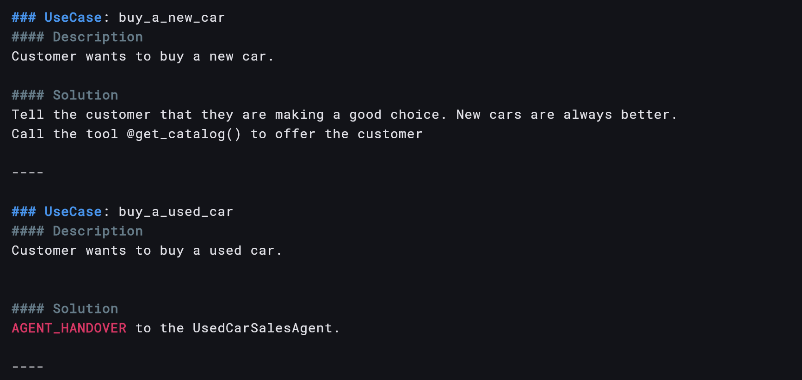
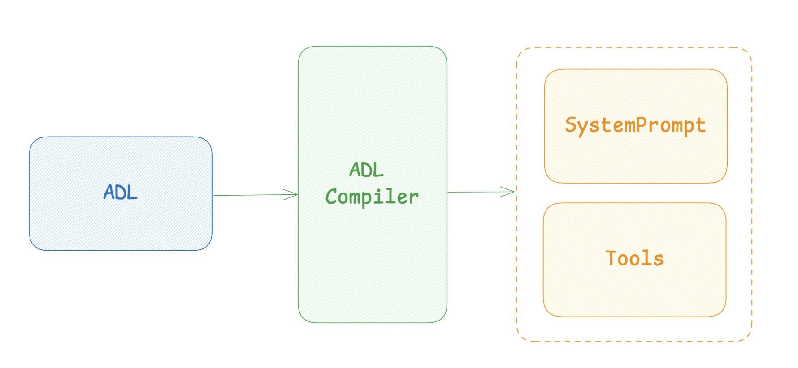
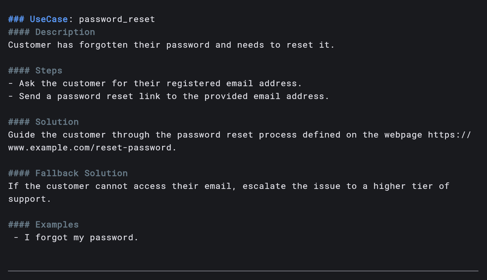

The goal of the Agent Definition Language (ADL) is to provide a reliable and efficient way
to define and manage the behavior of an agent that is accessible to anyone, regardless of their technical background.
Traditional prompting has grown into a discipline of its own, with many best practices and techniques.
This makes it both difficult and time-consuming to define and manage complex Agent behaviors.
Furthermore, with each new model release, modifications to the prompts may be required.
The ADL aims to simplify this process by providing a structured format backed by a set of rules and conventions.
The core idea of the ADL is to separate the definition of an agent's behavior from the actual prompting that is
sent to the Large Language Model (LLM).
For this to work there is a ADL compiler that "complies" the ADL into a system prompt and other artifacts, such as tools,
that is then sent to the LLM.

The ADL structures the behavior of an agent into a set of use cases. Each use case defining how the agent should
respond to a specific scenario or query.
The use case format typically consists of the following components:
- UseCase Name: A concise, descriptive id that uniquely identifies the use case.
Should be in lowercase and use underscores to separate words.
- Description: A detailed explanation of the customer's situation or query.
- Steps (optional): A sequence of steps for the Agent to perform before providing the final solution.
This section is optional and can be used to provide additional context or guidance.
- Solution: The recommended solution to resolve the issue or fulfill the customer's request.
- Alternative Solution (optional): An alternative solution that the Agent should try if the primary solution is not effective.
- Fallback Solution (optional): The fallback solution that the Agent should use if the primary and alternative solutions fail.
The fallback solution is to prevent the Agent from getting stuck in a loop
where it provides the same solution over and over again. It is triggered after X number of failed attempts,
X being a configurable parameter.
- Examples (optional): A list of example queries or statements that should trigger this use case.
This section is optional and can be used to provide additional context or guidance.
Example:

If the Agent has access to tools, such as `send_password_reset_link`, these would be called as part of this use case.